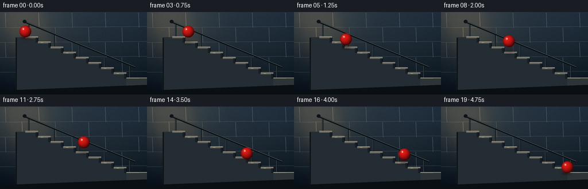
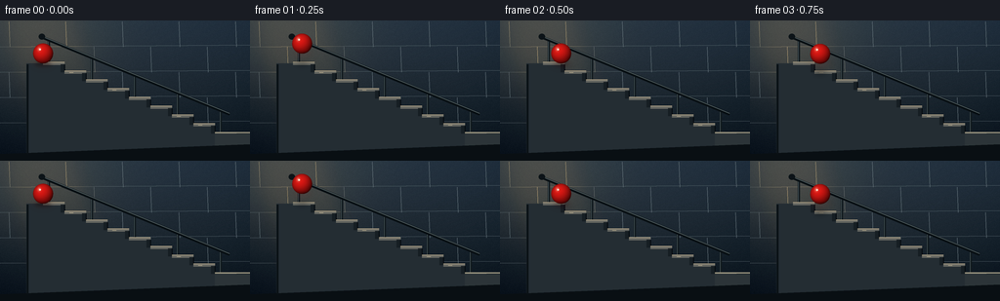

CODING AGENTS AS PIXEL WORLD MODELS
traex/GPT-5.6-Sol · instance_preservation_0021
点击播放 · 原生 RGB 像素
逐轮保存的候选
回放视频、检查图与代码变化。
每份候选均可单独播放。实际图片检查记录在下方工具轨迹中。
候选 01播放与检查图
点击播放 · 原生 RGB 像素

展开代码变化
--- 上一保存版本
+++ 本次保存版本
@@ -0,0 +1,209 @@
+from pathlib import Path
+import math
+import numpy as np
+from PIL import Image, ImageDraw, ImageFilter
+import artifact_io
+
+CASE_DIR = Path(__file__).resolve().parent
+W, H, N = 256, 144, 20
+S = 4
+rng = np.random.default_rng(17)
+
+
+def sc(v):
+ return int(round(v * S))
+
+
+def pts(seq):
+ return [(sc(x), sc(y)) for x, y in seq]
+
+
+def make_background(frame_index):
+ """Cool dawn wall with a soft pool of warm light, rendered at output res then upsampled."""
+ yy, xx = np.mgrid[0:H*S, 0:W*S]
+ xn = xx / (W*S - 1)
+ yn = yy / (H*S - 1)
+ top = np.array([44, 58, 70.0])
+ bottom = np.array([20, 28, 35.0])
+ arr = top[None,None,:] * (1-yn[:,:,None]) + bottom[None,None,:] * yn[:,:,None]
+ # Warm, diffuse light enters from the upper-left.
+ glow = np.exp(-(((xn-.13)/.29)**2 + ((yn-.08)/.43)**2))[:,:,None]
+ arr += glow * np.array([31, 23, 12.0])
+ # Subtle vignette keeps attention on the staircase and ball.
+ vig = np.clip(((xn-.5)/.72)**2 + ((yn-.47)/.85)**2, 0, 1)[:,:,None]
+ arr -= vig * np.array([13, 12, 10.0])
+ # Stable fine texture (no distracting temporal shimmer).
+ noise_small = rng.normal(0, 0.9, (H, W))
+ noise = np.array(Image.fromarray(np.uint8(np.clip(noise_small+128,0,255))).resize((W*S,H*S), Image.Resampling.BILINEAR), dtype=float)-128
+ arr += noise[:,:,None]
+ return Image.fromarray(np.uint8(np.clip(arr,0,255)), 'RGB').convert('RGBA')
+
+
+def draw_environment(im):
+ d = ImageDraw.Draw(im, 'RGBA')
+ # Large masonry joints in the background wall.
+ for y in [27, 53, 79, 105]:
+ d.line(pts([(0,y),(256,y-2)]), fill=(105,119,125,24), width=sc(.55))
+ offset = 9 if (y//26)%2 else -20
+ for x in range(offset, 280, 58):
+ d.line(pts([(x,y-26),(x+1,y)]), fill=(102,116,123,17), width=sc(.45))
+ # Soft rectangular shaft of light.
+ light = Image.new('RGBA', im.size, (0,0,0,0))
+ ld = ImageDraw.Draw(light, 'RGBA')
+ ld.polygon(pts([(0,0),(80,0),(130,144),(43,144)]), fill=(255,194,102,13))
+ light = light.filter(ImageFilter.GaussianBlur(sc(9)))
+ im.alpha_composite(light)
+
+ d = ImageDraw.Draw(im, 'RGBA')
+ # Far-side steel railing, behind the ball.
+ rail_color = (20,28,32,218)
+ rail_hi = (91,105,108,100)
+ # posts anchored to selected treads
+ for i in [0,2,4,6,8]:
+ x = 44 + 22*i + 6
+ floor_y = 44 + 9*i
+ top_y = floor_y - 25
+ d.line(pts([(x,floor_y+1),(x,top_y)]), fill=rail_color, width=sc(2.4))
+ d.line(pts([(x-.55,floor_y),(x-.55,top_y)]), fill=rail_hi, width=sc(.6))
+ d.ellipse((sc(x-2.0),sc(floor_y-1),sc(x+2),sc(floor_y+2.8)), fill=(14,21,24,230))
+ # rail tracks the stair slope
+ d.line(pts([(43,17),(235,96)]), fill=(12,19,23,245), width=sc(3.0), joint='curve')
+ d.line(pts([(43,16.3),(235,95.3)]), fill=(105,120,121,120), width=sc(.7))
+ d.ellipse((sc(39.5),sc(13.5),sc(46),sc(19.5)), fill=(16,23,27,245))
+
+ # Stair mass: stepped silhouette.
+ contour = [(27,44),(44,44)]
+ for i in range(9):
+ contour += [(44+22*(i+1),44+9*i),(44+22*(i+1),44+9*(i+1))]
+ contour += [(256,116),(256,144),(27,144)]
+ d.polygon(pts(contour), fill=(39,48,54,255))
+
+ # Each tread, lip, and riser is individually shaded for unmistakable stairs.
+ for i in range(9):
+ xl, xr = 44+22*i, 44+22*(i+1)
+ y = 44+9*i
+ # faintly warm stone tread
+ d.polygon(pts([(xl,y-1.25),(xr,y-1.25),(xr,y+1.4),(xl,y+1.4)]),
+ fill=(104,105,99,255))
+ d.line(pts([(xl,y-1.15),(xr,y-1.15)]), fill=(180,166,139,155), width=sc(.7))
+ # vertical riser at the front edge
+ d.polygon(pts([(xr,y+1.0),(xr+1,y+9),(xr-4,y+9),(xr-4,y+1.0)]),
+ fill=(26,33,38,235))
+ d.line(pts([(xr,y+1),(xr,y+8.8)]), fill=(9,15,19,170), width=sc(1))
+ # small chips / wear marks, fixed and unobtrusive
+ if i in (1,3,6,7):
+ d.line(pts([(xl+5,y+.2),(xl+9,y+.2)]), fill=(199,184,150,85), width=sc(.45))
+ # front ground landing and base shadow
+ d.polygon(pts([(220,116),(256,116),(256,144),(220,144)]), fill=(47,55,58,255))
+ d.line(pts([(220,115),(256,115)]), fill=(155,149,128,145), width=sc(1.2))
+ d.polygon(pts([(0,137),(256,127),(256,144),(0,144)]), fill=(13,19,23,145))
+
+ # Foreground side trim gives depth to stair structure.
+ d.line(pts([(28,45),(28,137)]), fill=(14,21,25,180), width=sc(2))
+
+
+def ball_position(fi):
+ # Eight complete, readable bounces. Contacts align with successive stair noses.
+ q = 8.0 * fi / (N-1)
+ seg = min(7, int(math.floor(q))) if fi < N-1 else 7
+ p = q - math.floor(q)
+ if fi == N-1:
+ seg, p = 7, 1.0
+ x0, y0 = 44 + 22*seg, 44 + 9*seg
+ x1, y1 = x0 + 22, y0 + 9
+ x = x0 + (x1-x0)*p
+ linear_ground = y0 + (y1-y0)*p
+ lift = 14.2 * 4*p*(1-p)
+ radius = 10.3
+ y = linear_ground - radius - lift
+ return x, y, radius, seg, p
+
+
+def draw_ball_and_shadow(im, fi):
+ cx, cy, r, seg, p = ball_position(fi)
+ d = ImageDraw.Draw(im, 'RGBA')
+
+ # Contact shadow stays on the current tread and tightens at impact.
+ tread_y = 44 + 9*seg
+ if fi == N-1:
+ tread_y = 44 + 9*8
+ airborne = 4*p*(1-p)
+ sw = 8.3 - 2.3*airborne
+ alpha = int(112 - 42*airborne)
+ shadow = Image.new('RGBA', im.size, (0,0,0,0))
+ sd = ImageDraw.Draw(shadow, 'RGBA')
+ sx = min(cx, 44+22*(seg+1)-1.5)
+ sd.ellipse((sc(sx-sw),sc(tread_y-1.2),sc(sx+sw),sc(tread_y+2.5)), fill=(3,7,9,alpha))
+ shadow = shadow.filter(ImageFilter.GaussianBlur(sc(1.7 + airborne)))
+ im.alpha_composite(shadow)
+
+ # A soft red bounce-light on nearby stone, subtle enough not to become a second object.
+ bounce = Image.new('RGBA', im.size, (0,0,0,0))
+ bd = ImageDraw.Draw(bounce, 'RGBA')
+ bd.ellipse((sc(cx-r*1.2),sc(cy+r*.45),sc(cx+r*1.2),sc(cy+r*1.5)), fill=(181,28,22,24))
+ bounce = bounce.filter(ImageFilter.GaussianBlur(sc(4)))
+ im.alpha_composite(bounce)
+
+ # Procedural shaded sphere: constant size and markings preserve its identity.
+ x0, x1 = max(0,sc(cx-r-1)), min(W*S,sc(cx+r+1))
+ y0, y1 = max(0,sc(cy-r-1)), min(H*S,sc(cy+r+1))
+ yy, xx = np.mgrid[y0:y1, x0:x1]
+ nx = (xx/S - cx)/r
+ ny = (yy/S - cy)/r
+ rr = nx*nx + ny*ny
+ mask = rr <= 1.0
+ nz = np.sqrt(np.clip(1.0-rr,0,1))
+ # light from upper-left, with rim and lower occlusion
+ light = np.clip(-.48*nx - .66*ny + .66*nz, -1, 1)
+ shade = np.clip(.54 + .46*light, .16, 1.12)
+ base = np.zeros((y1-y0,x1-x0,4), dtype=np.uint8)
+ base[...,0] = np.clip(224*shade + 14,0,255)
+ base[...,1] = np.clip(29*shade + 3,0,255)
+ base[...,2] = np.clip(24*shade + 3,0,255)
+ # dark saturated rim makes silhouette crisp
+ rim = np.clip((1-nz)*.44,0,.44)
+ base[...,0] = np.clip(base[...,0]*(1-rim),0,255)
+ base[...,1] = np.clip(base[...,1]*(1-rim),0,255)
+ base[...,2] = np.clip(base[...,2]*(1-rim),0,255)
+ # glossy highlight is fixed relative to the sphere/light
+ hi = np.exp(-(((nx+.38)/.17)**2 + ((ny+.43)/.20)**2))
+ for c in range(3):
+ target = [255,188,161][c]
+ base[...,c] = np.clip(base[...,c]*(1-.58*hi)+target*.58*hi,0,255)
+ # faint reflected warm rim on lower right
+ reflected = np.exp(-(((nx-.45)/.38)**2 + ((ny-.70)/.20)**2))*.25
+ base[...,0] = np.clip(base[...,0]+45*reflected,0,255)
+ # supersampled edge alpha
+ edge_alpha = np.clip((1.025-np.sqrt(rr))*S*r,0,1)
+ base[...,3] = np.uint8(255*edge_alpha*mask)
+ patch = Image.fromarray(base,'RGBA')
+ im.alpha_composite(patch,(x0,y0))
+
+ # Pinpoint specular glint adds material clarity.
+ d = ImageDraw.Draw(im, 'RGBA')
+ d.ellipse((sc(cx-r*.40),sc(cy-r*.48),sc(cx-r*.23),sc(cy-r*.31)), fill=(255,226,210,175))
+
+
+def render(fi):
+ im = make_background(fi)
+ draw_environment(im)
+ draw_ball_and_shadow(im, fi)
+ # Downsample for clean antialiasing and cinematic softness.
+ im = im.convert('RGB').resize((W,H), Image.Resampling.LANCZOS)
+ # Very subtle final contrast curve.
+ arr = np.asarray(im).astype(np.float32)/255.0
+ arr = np.clip((arr-.5)*1.035+.5,0,1)
+ return np.uint8(arr*255+.5)
+
+
+def main():
+ global rng
+ # Reset for perfectly reproducible regenerations.
+ rng = np.random.default_rng(17)
+ frames = np.stack([render(i) for i in range(N)], axis=0)
+ artifact_io.save(frames, CASE_DIR)
+ print(f"saved {frames.shape} {frames.dtype} to {CASE_DIR}")
+
+
+if __name__ == '__main__':
+ main()
可观测工具轨迹
实际执行的命令与返回图片。
命令 1exit 0
/bin/bash -lc "cat prompt.txt && printf '\\n--- GENERATION_RULES.md ---\\n' && cat GENERATION_RULES.md"
命令 2exit 0
/bin/bash -lc "cat task_spec.json && printf '\\n--- files ---\\n' && find . -maxdepth 2 -type f -printf '%p\\n' | sort"
命令 3exit 0
/bin/bash -lc "sed -n '1,240p' artifact_io.py"
命令 4exit 0
/bin/bash -lc "cat > generate.py <<'PY'
from pathlib import Path
import math
import numpy as np
from PIL import Image, ImageDraw, ImageFilter
import artifact_io
CASE_DIR = Path(__file__).resolve().parent
W, H, N = 256, 144, 20
S = 4
rng = np.random.default_rng(17)
def sc(v):
return int(round(v * S))
def pts(seq):
return [(sc(x), sc(y)) for x, y in seq]
def make_background(frame_index):
\"\"\"Cool dawn wall with a soft pool of warm light, rendered at output res then upsampled.\"\"\"
yy, xx = np.mgrid[0:H*S, 0:W*S]
xn = xx / (W*S - 1)
yn = yy / (H*S - 1)
top = np.array([44, 58, 70.0])
bottom = np.array([20, 28, 35.0])
arr = top[None,None,:] * (1-yn[:,:,None]) + bottom[None,None,:] * yn[:,:,None]
# Warm, diffuse light enters from the upper-left.
glow = np.exp(-(((xn-.13)/.29)**2 + ((yn-.08)/.43)**2))[:,:,None]
arr += glow * np.array([31, 23, 12.0])
# Subtle vignette keeps attention on the staircase and ball.
vig = np.clip(((xn-.5)/.72)**2 + ((yn-.47)/.85)**2, 0, 1)[:,:,None]
arr -= vig * np.array([13, 12, 10.0])
# Stable fine texture (no distracting temporal shimmer).
noise_small = rng.normal(0, 0.9, (H, W))
noise = np.array(Image.fromarray(np.uint8(np.clip(noise_small+128,0,255))).resize((W*S,H*S), Image.Resampling.BILINEAR), dtype=float)-128
arr += noise[:,:,None]
return Image.fromarray(np.uint8(np.clip(arr,0,255)), 'RGB').convert('RGBA')
def draw_environment(im):
d = ImageDraw.Draw(im, 'RGBA')
# Large masonry joints in the background wall.
for y in [27, 53, 79, 105]:
d.line(pts([(0,y),(256,y-2)]), fill=(105,119,125,24), width=sc(.55))
offset = 9 if (y//26)%2 else -20
for x in range(offset, 280, 58):
d.line(pts([(x,y-26),(x+1,y)]), fill=(102,116,123,17), width=sc(.45))
# Soft rectangular shaft of light.
light = Image.new('RGBA', im.size, (0,0,0,0))
ld = ImageDraw.Draw(light, 'RGBA')
ld.polygon(pts([(0,0),(80,0),(130,144),(43,144)]), fill=(255,194,102,13))
light = light.filter(ImageFilter.GaussianBlur(sc(9)))
im.alpha_composite(light)
d = ImageDraw.Draw(im, 'RGBA')
# Far-side steel railing, behind the ball.
rail_color = (20,28,32,218)
rail_hi = (91,105,108,100)
# posts anchored to selected treads
for i in [0,2,4,6,8]:
x = 44 + 22*i + 6
floor_y = 44 + 9*i
top_y = floor_y - 25
d.line(pts([(x,floor_y+1),(x,top_y)]), fill=rail_color, width=sc(2.4))
d.line(pts([(x-.55,floor_y),(x-.55,top_y)]), fill=rail_hi, width=sc(.6))
d.ellipse((sc(x-2.0),sc(floor_y-1),sc(x+2),sc(floor_y+2.8)), fill=(14,21,24,230))
# rail tracks the stair slope
d.line(pts([(43,17),(235,96)]), fill=(12,19,23,245), width=sc(3.0), joint='curve')
d.line(pts([(43,16.3),(235,95.3)]), fill=(105,120,121,120), width=sc(.7))
d.ellipse((sc(39.5),sc(13.5),sc(46),sc(19.5)), fill=(16,23,27,245))
# Stair mass: stepped silhouette.
contour = [(27,44),(44,44)]
for i in range(9):
contour += [(44+22*(i+1),44+9*i),(44+22*(i+1),44+9*(i+1))]
contour += [(256,116),(256,144),(27,144)]
d.polygon(pts(contour), fill=(39,48,54,255))
# Each tread, lip, and riser is individually shaded for unmistakable stairs.
for i in range(9):
xl, xr = 44+22*i, 44+22*(i+1)
y = 44+9*i
# faintly warm stone tread
d.polygon(pts([(xl,y-1.25),(xr,y-1.25),(xr,y+1.4),(xl,y+1.4)]),
fill=(104,105,99,255))
d.line(pts([(xl,y-1.15),(xr,y-1.15)]), fill=(180,166,139,155), width=sc(.7))
# vertical riser at the front edge
d.polygon(pts([(xr,y+1.0),(xr+1,y+9),(xr-4,y+9),(xr-4,y+1.0)]),
fill=(26,33,38,235))
d.line(pts([(xr,y+1),(xr,y+8.8)]), fill=(9,15,19,170), width=sc(1))
# small chips / wear marks, fixed and unobtrusive
if i in (1,3,6,7):
d.line(pts([(xl+5,y+.2),(xl+9,y+.2)]), fill=(199,184,150,85), width=sc(.45))
# front ground landing and base shadow
d.polygon(pts([(220,116),(256,116),(256,144),(220,144)]), fill=(47,55,58,255))
d.line(pts([(220,115),(256,115)]), fill=(155,149,128,145), width=sc(1.2))
d.polygon(pts([(0,137),(256,127),(256,144),(0,144)]), fill=(13,19,23,145))
# Foreground side trim gives depth to stair structure.
d.line(pts([(28,45),(28,137)]), fill=(14,21,25,180), width=sc(2))
def ball_position(fi):
# Eight complete, readable bounces. Contacts align with successive stair noses.
q = 8.0 * fi / (N-1)
seg = min(7, int(math.floor(q))) if fi < N-1 else 7
p = q - math.floor(q)
if fi == N-1:
seg, p = 7, 1.0
x0, y0 = 44 + 22*seg, 44 + 9*seg
x1, y1 = x0 + 22, y0 + 9
x = x0 + (x1-x0)*p
linear_ground = y0 + (y1-y0)*p
lift = 14.2 * 4*p*(1-p)
radius = 10.3
y = linear_ground - radius - lift
return x, y, radius, seg, p
def draw_ball_and_shadow(im, fi):
cx, cy, r, seg, p = ball_position(fi)
d = ImageDraw.Draw(im, 'RGBA')
# Contact shadow stays on the current tread and tightens at impact.
tread_y = 44 + 9*seg
if fi == N-1:
tread_y = 44 + 9*8
airborne = 4*p*(1-p)
sw = 8.3 - 2.3*airborne
alpha = int(112 - 42*airborne)
shadow = Image.new('RGBA', im.size, (0,0,0,0))
sd = ImageDraw.Draw(shadow, 'RGBA')
sx = min(cx, 44+22*(seg+1)-1.5)
sd.ellipse((sc(sx-sw),sc(tread_y-1.2),sc(sx+sw),sc(tread_y+2.5)), fill=(3,7,9,alpha))
shadow = shadow.filter(ImageFilter.GaussianBlur(sc(1.7 + airborne)))
im.alpha_composite(shadow)
# A soft red bounce-light on nearby stone, subtle enough not to become a second object.
bounce = Image.new('RGBA', im.size, (0,0,0,0))
bd = ImageDraw.Draw(bounce, 'RGBA')
bd.ellipse((sc(cx-r*1.2),sc(cy+r*.45),sc(cx+r*1.2),sc(cy+r*1.5)), fill=(181,28,22,24))
bounce = bounce.filter(ImageFilter.GaussianBlur(sc(4)))
im.alpha_composite(bounce)
# Procedural shaded sphere: constant size and markings preserve its identity.
x0, x1 = max(0,sc(cx-r-1)), min(W*S,sc(cx+r+1))
y0, y1 = max(0,sc(cy-r-1)), min(H*S,sc(cy+r+1))
yy, xx = np.mgrid[y0:y1, x0:x1]
nx = (xx/S - cx)/r
ny = (yy/S - cy)/r
rr = nx*nx + ny*ny
mask = rr <= 1.0
nz = np.sqrt(np.clip(1.0-rr,0,1))
# light from upper-left, with rim and lower occlusion
light = np.clip(-.48*nx - .66*ny + .66*nz, -1, 1)
shade = np.clip(.54 + .46*light, .16, 1.12)
base = np.zeros((y1-y0,x1-x0,4), dtype=np.uint8)
base[...,0] = np.clip(224*shade + 14,0,255)
base[...,1] = np.clip(29*shade + 3,0,255)
base[...,2] = np.clip(24*shade + 3,0,255)
# dark saturated rim makes silhouette crisp
rim = np.clip((1-nz)*.44,0,.44)
base[...,0] = np.clip(base[...,0]*(1-rim),0,255)
base[...,1] = np.clip(base[...,1]*(1-rim),0,255)
base[...,2] = np.clip(base[...,2]*(1-rim),0,255)
# glossy highlight is fixed relative to the sphere/light
hi = np.exp(-(((nx+.38)/.17)**2 + ((ny+.43)/.20)**2))
for c in range(3):
target = [255,188,161][c]
base[...,c] = np.clip(base[...,c]*(1-.58*hi)+target*.58*hi,0,255)
# faint reflected warm rim on lower right
reflected = np.exp(-(((nx-.45)/.38)**2 + ((ny-.70)/.20)**2))*.25
base[...,0] = np.clip(base[...,0]+45*reflected,0,255)
# supersampled edge alpha
edge_alpha = np.clip((1.025-np.sqrt(rr))*S*r,0,1)
base[...,3] = np.uint8(255*edge_alpha*mask)
patch = Image.fromarray(base,'RGBA')
im.alpha_composite(patch,(x0,y0))
# Pinpoint specular glint adds material clarity.
d = ImageDraw.Draw(im, 'RGBA')
d.ellipse((sc(cx-r*.40),sc(cy-r*.48),sc(cx-r*.23),sc(cy-r*.31)), fill=(255,226,210,175))
def render(fi):
im = make_background(fi)
draw_environment(im)
draw_ball_and_shadow(im, fi)
# Downsample for clean antialiasing and cinematic softness.
im = im.convert('RGB').resize((W,H), Image.Resampling.LANCZOS)
# Very subtle final contrast curve.
arr = np.asarray(im).astype(np.float32)/255.0
arr = np.clip((arr-.5)*1.035+.5,0,1)
return np.uint8(arr*255+.5)
def main():
global rng
# Reset for perfectly reproducible regenerations.
rng = np.random.default_rng(17)
frames = np.stack([render(i) for i in range(N)], axis=0)
artifact_io.save(frames, CASE_DIR)
print(f\"saved {frames.shape} {frames.dtype} to {CASE_DIR}\")
if __name__ == '__main__':
main()
PY
python generate.py
ls -lh pixels.npz inspection.png index.html frames/00.png frames/19.png"命令 5exit 0
/bin/bash -lc "python - <<'PY'
import json, numpy as np
from pathlib import Path
from PIL import Image
p=Path('.')
s=json.loads((p/'task_spec.json').read_text())
z=np.load(p/'pixels.npz')['pixels']
ims=np.stack([np.asarray(Image.open(p/'frames'/f'{i:02d}.png')) for i in range(20)])
print('spec:',s)
print('packed tensor:',z.shape,z.dtype)
print('decoded frames:',ims.shape,ims.dtype)
print('unique frame hashes:',len({im.tobytes() for im in ims}))
print('artifacts:',all((p/x).exists() for x in ['pixels.npz','index.html','inspection.png','transition_check.png','generate.py']))
PY"视觉工具实际返回图片 1

视觉工具实际返回图片 2

保存候选 1 份；完成命令 5 次；可验证图片返回 2 张。原始 API 响应与完整日志保留在本地。